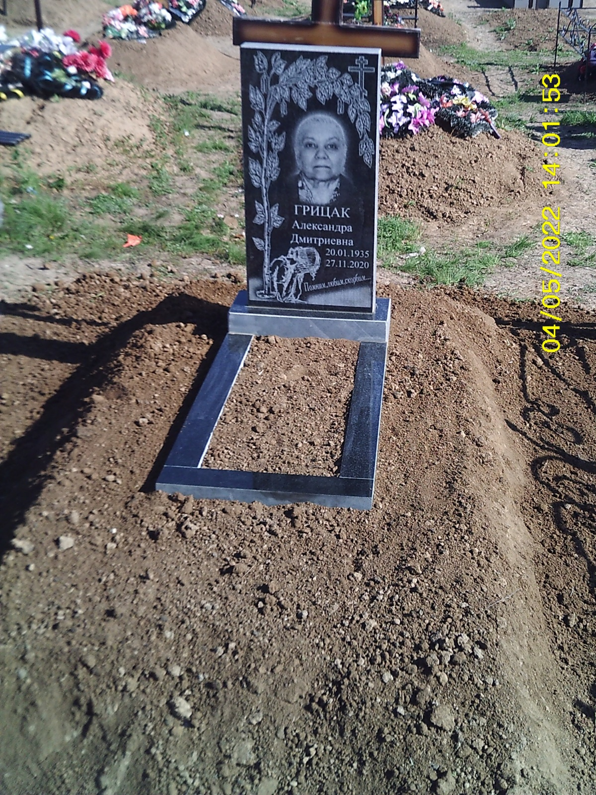
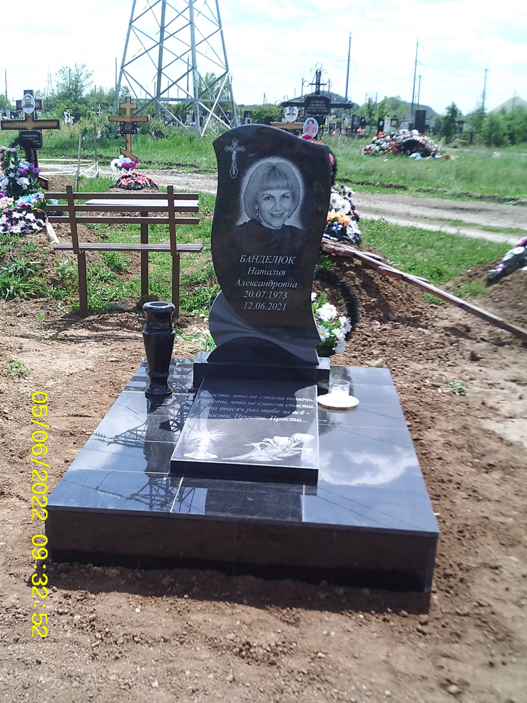
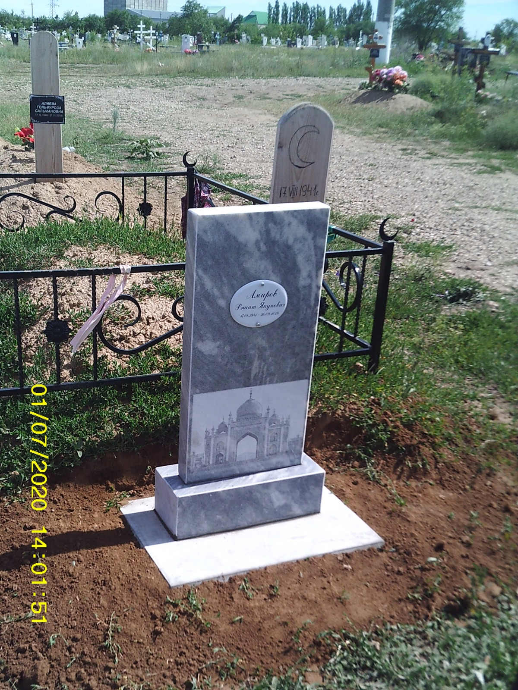
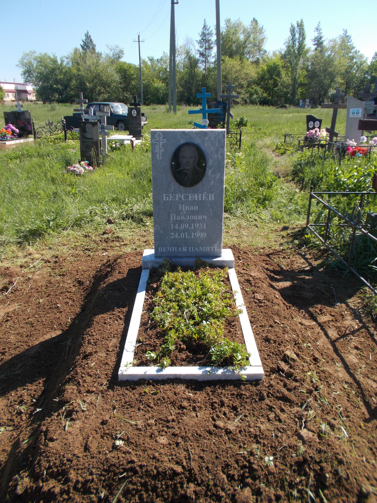
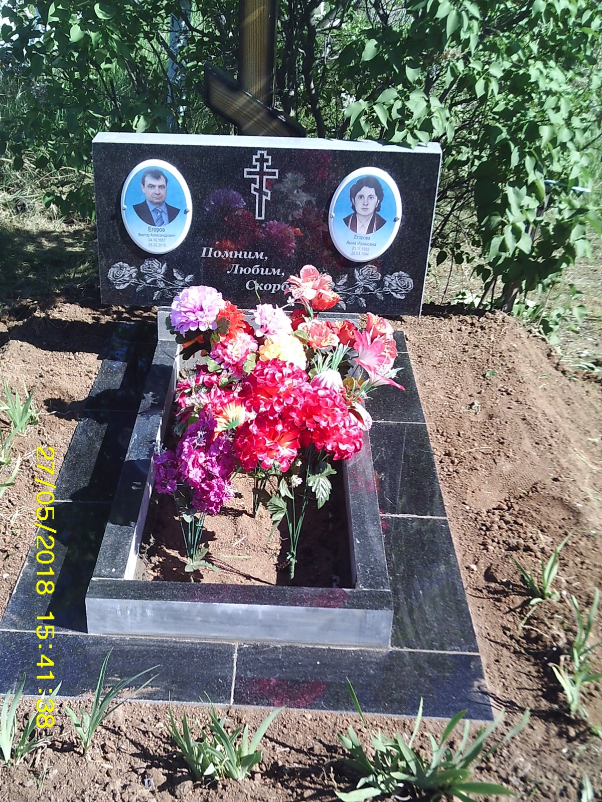
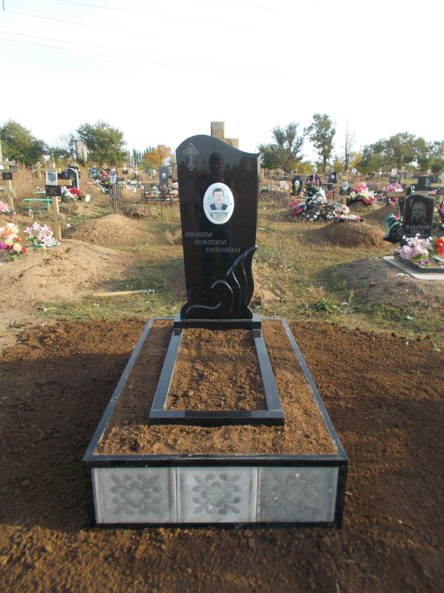
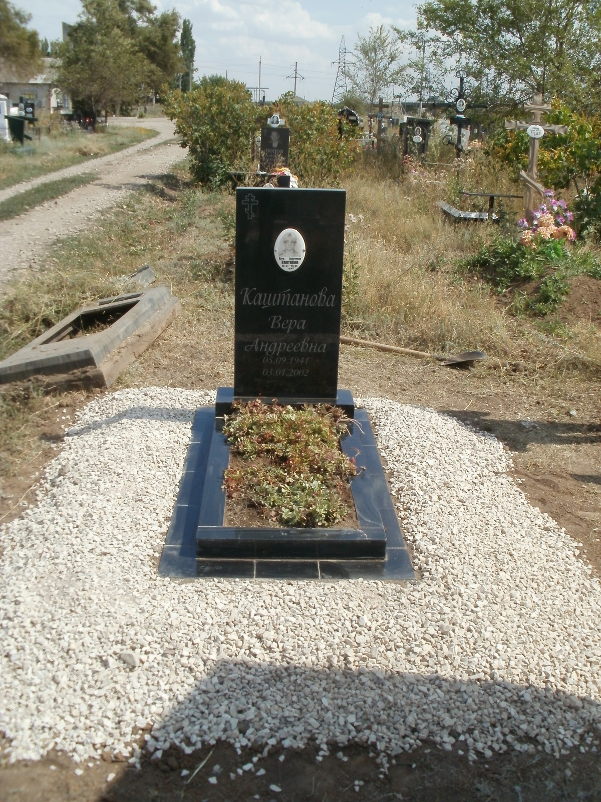
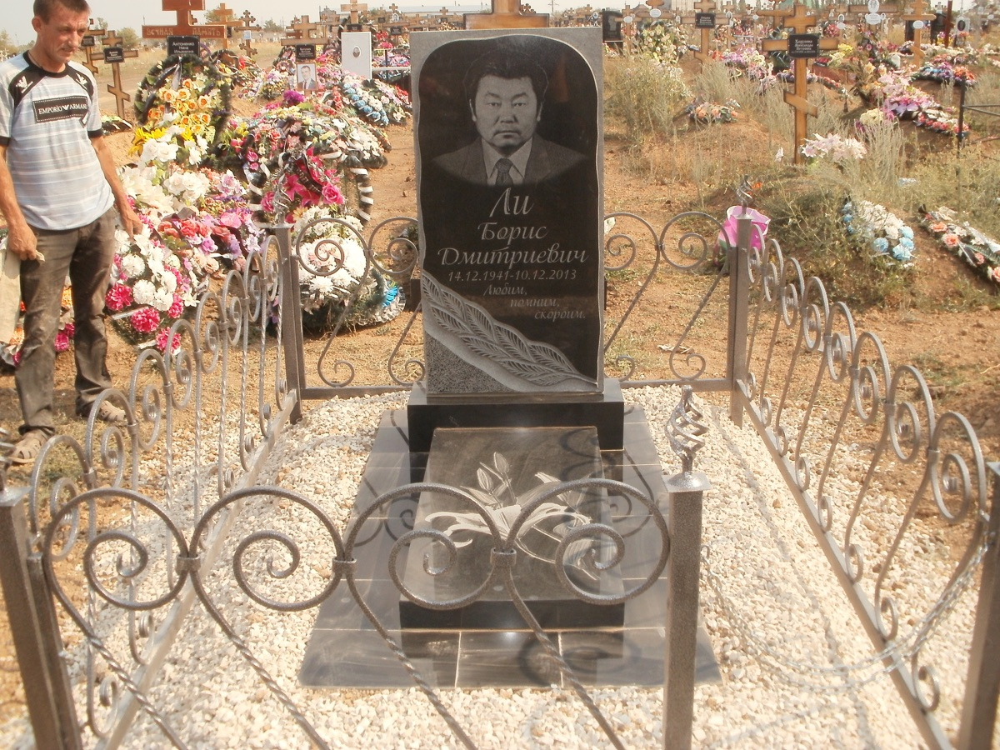

Варианты
- Стандартная установка гранита на ж/б основание
- Стандартная установка мрамора на ж/б основание
- Установка с облицовкой гранитной плиткой
- Установка памятника в короб
- Обсыпка щебнем
- Облицовка + надгробная плита + щебень
- Бетонная заливка 1,26×1,68 с надгробной плитой
- Бетонная заливка 1,26×1,68 с цветником
- Целиковая заливка без цветника и плиты
- Заливка с гранитной плиткой, плитой и вазой
- Мусульманский памятник (стандарт)
Подробный состав работ (гравировка, отверстия, доставка, ж/б основание, бригада) — по запросу и в исходном описании.
Примеры установок








Организация похорон — центр ритуальных услуг «Влата» (отдельная организация).